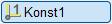
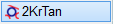
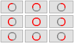
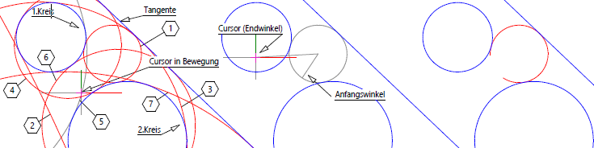

 
Mit dieser Funktion können Sie Kreise (Teilkreise) zeichnen, die an zwei Kreisen und einer Linie anliegen.
Strichtyp und Liniendarstellung (Stift) können über die Optionspaletten (im Funktionsbereich) gewählt oder mit der so wie-Funktion von einem anderen Element übernommen werden.

Siehe auch: |
1.Anliegende Kreise wählen
§Klicken Sie mit der linken Maustaste die Kreise an, an denen der neue Kreis anliegen soll. [1. Kreis]; [2. Kreis].
2.Tangente wählen
§Klicken Sie die Linie an, die den Kreis berühren soll. [1. Tangente].
3.Zielkreis wählen
Es gibt maximal acht Lösungen. ISBCAD bietet alle möglichen Ergebnisse als Vorschau an, die sich bei der jeweiligen Konstellation ergeben.
§Bewegen Sie den Cursor über einen Kreis. Der Kreis wird hervorgehoben. Die Nummer des Kreises wird in der Eingabe angezeigt. [W.Kreis].
§Klicken Sie die linke Maustaste, um den aktuell selektierten Kreis auszuwählen.
4.Anfangswinkel definieren
Beachten Sie, dass die Winkel gegen den Uhrzeiger gezeichnet werden. Der Endwinkel muss größer sein als der Anfangswinkel.
Führen Sie einen der folgenden Schritte aus:
a)Geben Sie unter Anfangswinkel und Endwinkel den Winkel (0° bis 720°) in Altgrad ein und bestätigen Sie jeweils mit der Eingabetaste.
b)Wählen Sie mit einem Linksklick unter der Abfrage einen Vollkreis oder vordefinierten Teilkreis. Der Kreis wird sofort gezeichnet.
 |
c)Bewegen Sie die Maus, um eine "Gummibandlinie" vom Mittelpunkt zum Cursor als Hilfslinie anzuzeigen und den Winkel abzuschätzen.
–Um den nächsten bekannten Punkt auf dem Element als Schnittpunkt für den Radius zu übernehmen, klicken Sie mit der linken Maustaste auf eine Linie oder einen Kreis. Beachten Sie die Fangmarke.
–Um die "Gummibandlinie" als Winkel zu nehmen, klicken Sie mit der linken Maustaste auf eine freie Stelle.
5.Endwinkel definieren
Bei der Angabe des Endwinkels kann zwischen Winkel und Bogenlänge gewählt werden. Ist der Wert größer als der Kreisumfang, entsteht automatisch ein Vollkreis. Sie können den Anfangs- bzw. Endwinkel auch frei wählen. Hierfür wird eine Linie vom Mittelpunkt zum Cursor angezeigt.
§Für Winkel:
Geben Sie den gewünschten Winkel in Altgrad (0° bis 720°) in das Eingabefeld ein und bestätigen Sie. Klicken Sie, wie bei Anfangswinkel beschrieben, eine Stelle auf der Zeichenfläche oder ein Element an.
§Für Bogenlänge:
Geben Sie die gewünschte Länge des Kreisbogens ein und bestätigen Sie diese.
Der Endwinkel muss immer größer sein als der Anfangswinkel. Ist bei Bogenmaß die Bogenlänge größer als der Umfang, entsteht ein Vollkreis.
Beispiel:
 |
||
Bei Mausbewegung wird ein Kreis hervorgehoben und durch Mausklick ausgewählt. |
Für den Anfangs- und Endwinkel kann der Cursor und Klick mit der linken Maustaste benutzt werden. |
Das Ergebnis. |
Zugehörige Referenzen: